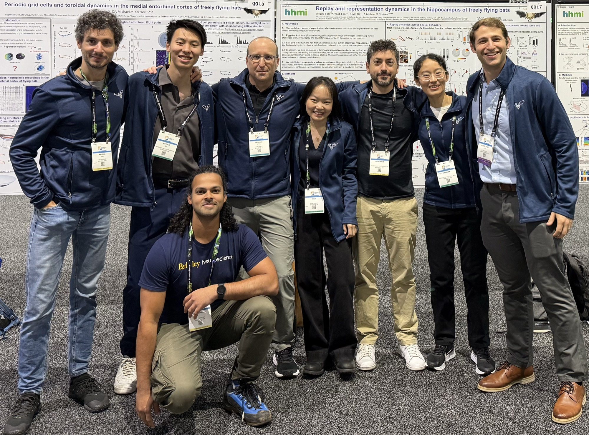

Open Positions
Come help define the neuroscience of natural intelligence
It matters not whether you come from systems neuroscience, engineering, or elsewhere entirely.

Where your discipline meets natural behavior
We welcome postdocs from every discipline. Areas that thrive here include, among many others:
- Systems neuroscience
- Neuroethology
- Electrophysiology
- Fluorescence imaging
- Behavioral analysis
- Computational methods & NeuroAI
- Circuit mapping
Expertise matters less than the drive to acquire it. To apply, send a CV via the contact form.
A Ph.D. in the neuroscience of natural intelligence
Prospective graduate researchers can join through three UC Berkeley programs:
Already admitted at Berkeley? Reach out directly to discuss rotation projects.
First steps, real experiments
We welcome undergraduate applicants, typically after sophomore or junior year. We recommend pursuing summer fellowships such as:
- SURF (Summer Undergraduate Research Fellowship)
- Haas Scholars
- Amgen Scholars Program
We prioritize passion and motivation over traditional credentials.
The lab’s application philosophy
The night is young.
Send a CV, three references, and a note on what you want to discover.